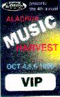
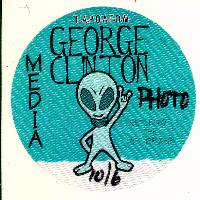
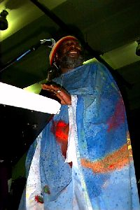
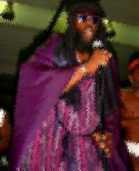

Your V.I.P. Pass

Your Media/Photo Pass!
(You are suddenly confronted by a security guard and he sez) Do you have your V.I.P. pass? Where's your media/photo pass? (As you break out your I.D. and proper passes you hear the REALLY BIG security dude say) You have shown me proper identification and authorization to continue forward. Please enter into... the Funk Zone.
George Clinton sez:

"I WANT TO FUNK YOU!"
And that's exactly what he did in Gainesville, Florida on October 6th. George Clinton and the almighty P-Funk All Stars descended down upon the Alachua Music Harvest. For those not familiar, the Harvest is three days of partying with over fifty bands performing on two different stages. Dudettes and dudes from all over were camping, drinking, and dancing while some of the most slammatocious tunes were jammin'!!! So i scraped my lazy butt off the couch and grabbed my laptop and digital camera and flew inta the scene. With www and e-mail abilities at my fingertips, my feelings were to share these festivities with everyone. The road sign up ahead said Gainesville, but little did i know i was about to enter into "The Funk Zone".

And Then All H&LL Broke Loose...The scene was insane!!! The main stage collapsed just two bands before Clinton's show and the Harvest crew pulled off a miraculous miracle. After cleaning out the inside facility on the fairgrounds, the crew constructed a stage big enough for Clinton's large on-tour-rage. This includes all the necessary stuff like electrical power supplies, the sound system, mix board and security. Can ya believe they did all this and more in a matter of two hours?!?!?! Being a musician myself, i wouldn't have believed it unless i saw it with my own two eyes 8-{)+ . The crew of the Harvest, who volunteer their time for free, deserve a HUGE debit of gratitude from Clinton fans all around the world. As the sayin' goes, "The show must go on." And that it did!!!
With the stage set, the "Mothership" landed and the music began to play. George Clinton and the P-Funk All stars really know how to party! Over three hours of nonstop Funkadelic music was heard by thousands of their faithful fans.

Yes, there was music in the air. Hits like Flashlight, One Nation Under a Groove, Freak of the Week, etc. filled the funkatocious night with musical delight! As Dr. Funkenstein (George Clinton) took center stage the crowd went WiLd.
Most bands have about four members. Some have up to six. Not Dr. Funkenstein, he's got over THIRTY ONE!!! With all these cool dudettes/dudes on stage, ya just never know what to expect. For it's all for bringin' the joy of music, funk style, that keeps packin' in the loyal followers. These followers may be five years old, or even fifty, though we want the funk. Gotta have that funk! And after over three hours of preachin' the word of funk to his loyal followers, even the newfound funkaholics get addicted to it's never ending rhyme and rhythm.
For when the party was over, my life was changed for the better. Got outta my funk and into the funk! P. Funk to be exact! So if you hear that the Mothership will be descending at a stage near you, may i humbly suggest you run, don't walk, and scarf up the slammatocious tunes brought forth by George (Dr. Funkenstein) Clinton and the P. Funk All Stars. Many thanks go out to Constance of C Zine and all those who gave me assistance with the proper passes and for bringin' me outta the doldrums i've been in. (Said like a musician at the end of a show) Thank you! Goodnight everybody!